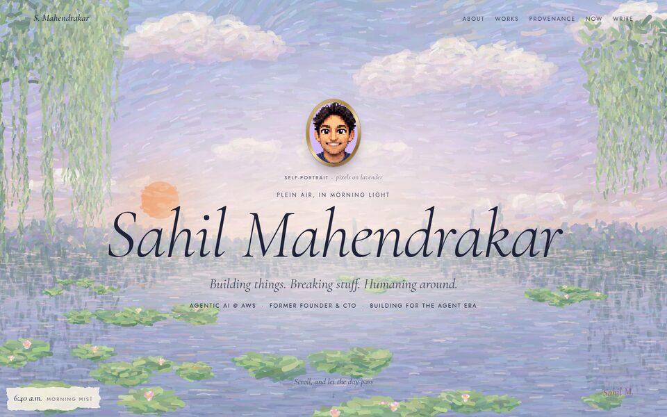
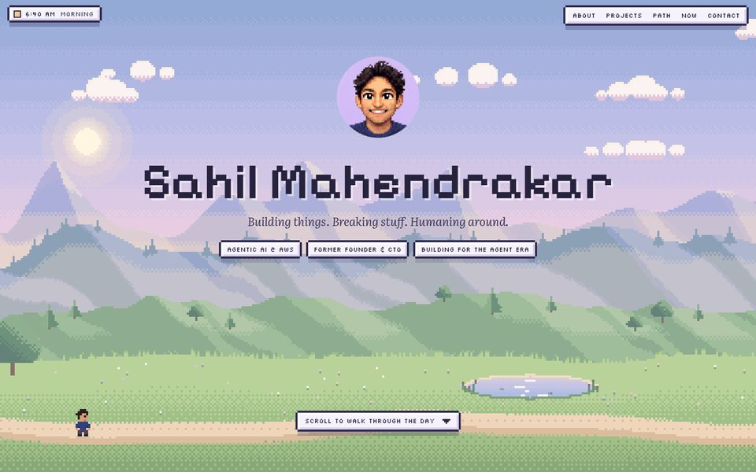
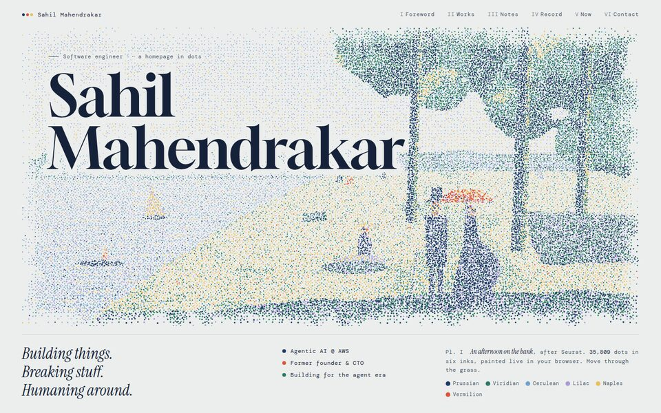
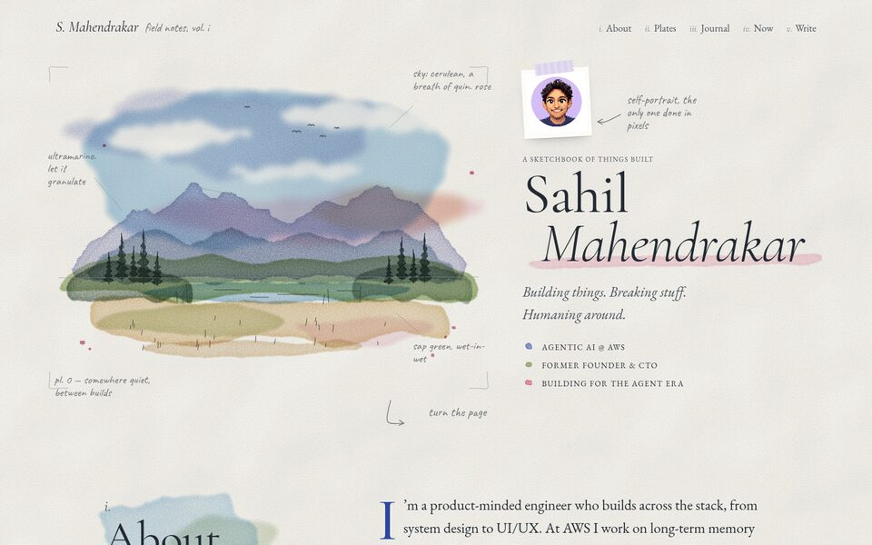
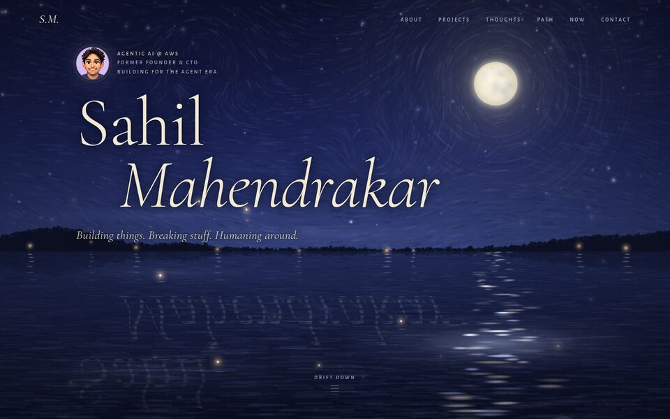
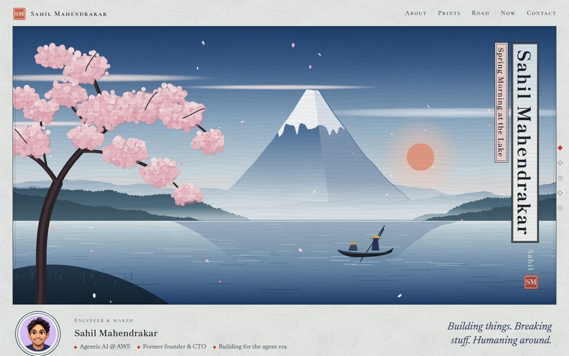

I
Plein Air
A living Monet pond painted from thousands of brushstrokes. Scrolling carries the light from morning to dusk.
Impressionism · generative canvas
II
Pixel Pastoral
A cozy pixel-art valley that you walk through over one day, ending under the stars with fireflies.
Pixel art · parallax canvas
III
Pointillist
Seurat meets dithering. A landscape of breathing dots that part around your cursor; project images resolve from halftone into color.
Pointillism · dithering · canvas
IV
Field Notes
An artist's sketchbook: watercolor washes, ink doodles, taped-in project plates and pencil marginalia.
Watercolor · SVG filters
V
Nocturne
A still lake at night with moonlight, mist and fireflies. Projects form a constellation, and the page ends at dawn.
Tonalism · night canvas
VI
Woodblock
A series of shin-hanga landscape prints. The seasons pass as you scroll, sealed with your initials.
Woodblock print · layered SVG